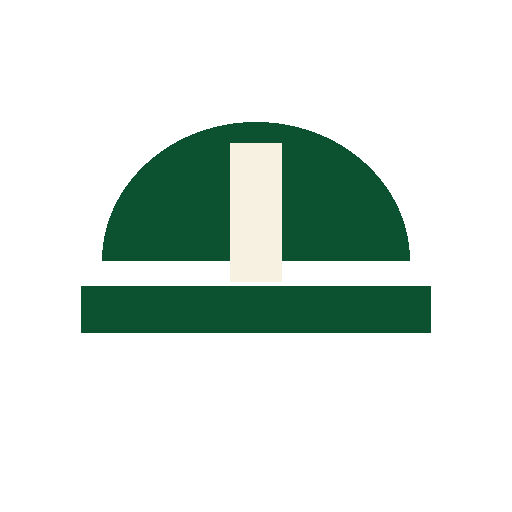
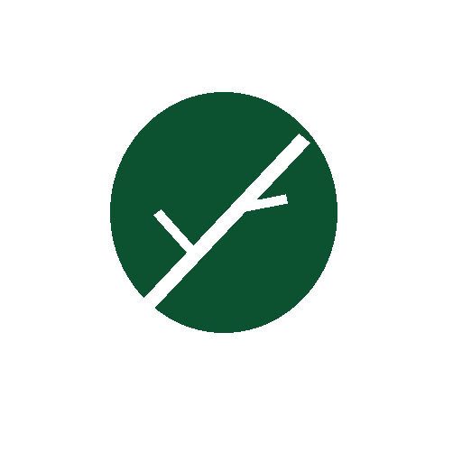

Baseado em normas e referências técnicas
Informações organizadas e atualizadas.
Aqui você encontra informações sobre classificação, segregação, armazenamento, transporte, reutilização, reciclagem e destinação adequada dos resíduos.
Informações organizadas e atualizadas.
Inclui alternativas de destinação e reaproveitamento no município.
Orientações práticas para diferentes tipos de obra.
Em constante atualização com novas informações e contribuições.
A ferramenta foi desenvolvida como parte de um projeto acadêmico para apoiar o gerenciamento de resíduos da construção civil (RCC), tendo como aplicação-piloto a Praça do Laranjal, em Viçosa/MG.
A estrutura foi planejada para permitir a inclusão futura de outras obras e novos registros.

Profissionais
ComunidadeEspaço destinado às informações gerais que contextualizam a classificação, o manejo e a destinação dos RCC.
Conceitos básicos, classes de resíduos, princípios de gerenciamento, referências legais e a relação entre as etapas da obra e os resíduos potencialmente gerados.
Selecione uma etapa ou atividade para visualizar os resíduos potencialmente associados.
Pesquise diretamente um material ou navegue pelos registros cadastrados.
Conheça a proposta acadêmica, a aplicação-piloto e a forma como a ferramenta foi desenvolvida.
Esta página será finalizada com o texto do projeto. Por enquanto, registra-se que a ferramenta foi concebida para organizar e tornar consultáveis informações sobre o gerenciamento de RCC em Viçosa/MG.
A Praça do Laranjal foi adotada como aplicação inicial da estrutura. As informações serão atualizadas à medida que a base técnica for consolidada.
A interface e a programação foram desenvolvidas com apoio de inteligência artificial generativa, a partir dos requisitos, decisões e validações realizadas pela equipe.
O acesso foi organizado para permitir consultas por etapa da obra ou diretamente pelo tipo de resíduo.
Você pode começar por uma etapa da obra ou pesquisar diretamente um resíduo.
Na consulta por etapa, veja os resíduos relacionados. Na consulta por resíduo, use a busca.
A ficha reúne classificação, procedimentos de gerenciamento, destinação, fontes e situação da informação.
Fontes legais, técnicas e bibliográficas utilizadas na organização das informações.
Informações institucionais e identificação da equipe responsável pelo projeto.
Disciplina: EXT009 — Tratamento e Gerenciamento de Resíduos Sólidos.
Equipe: Ana Paula Dutra Machado, Lisandra Oliveira Vieira e Ricky Alves Costa Andrade.
Instituição: Centro Universitário de Viçosa — UniViçosa.